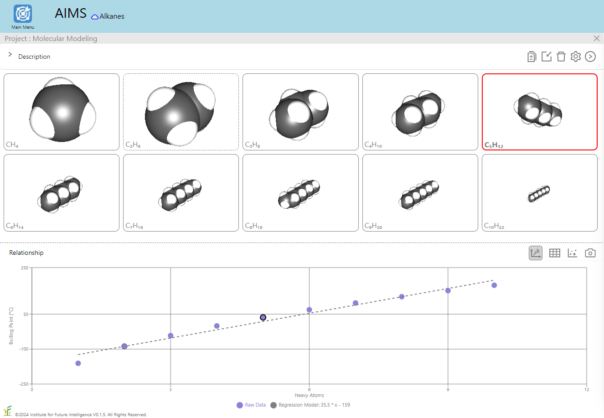
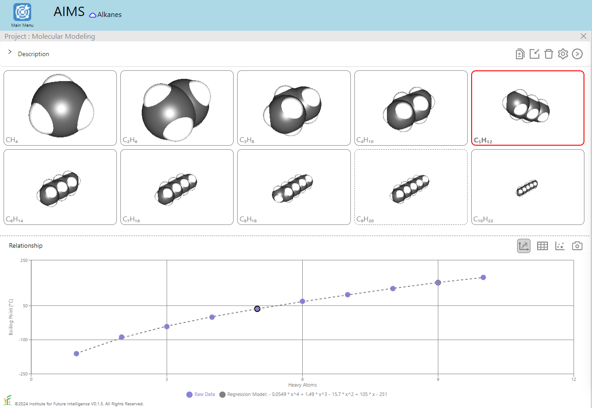
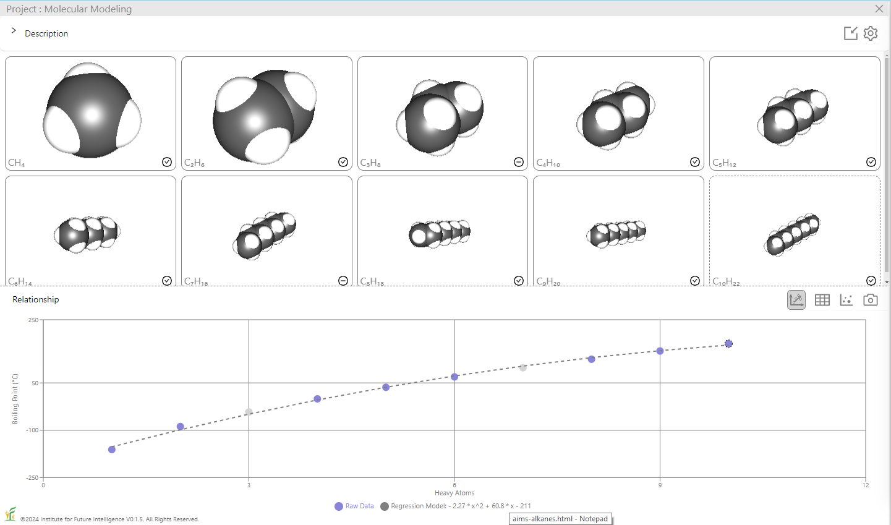
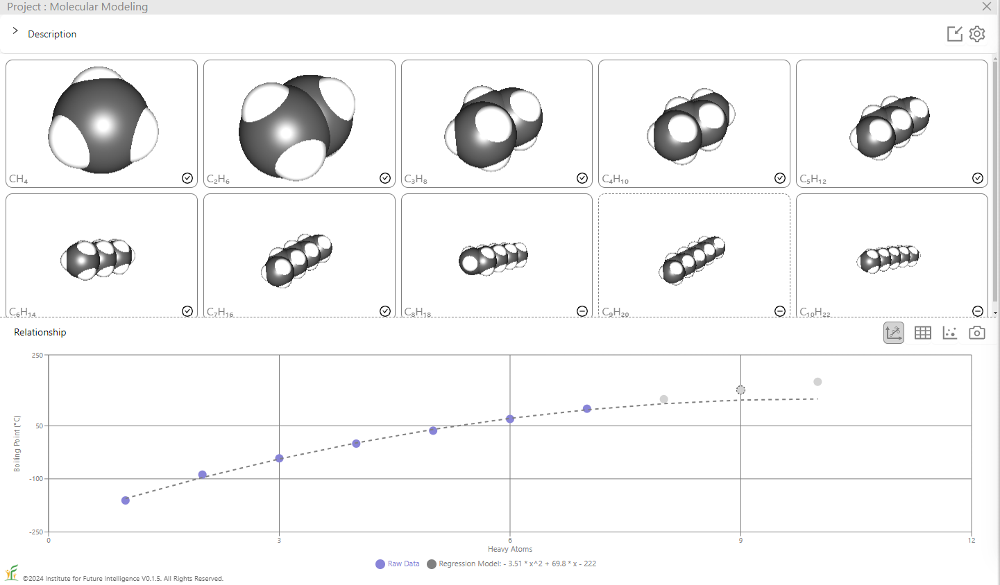

Quantitative Structure-Property Relationships of Linear Alkanes
Linear alkanes show a classic QSPR — boiling point rising with chain length. AIMS lets students build polynomial regressions and test them against molecular dynamics.
Linear alkanes consist of hydrogen and carbon atoms with a general chemical formula CnH2n+2. In the following window, the gallery on the left shows a number of alkanes with increasing chain length and the simulation on the right brings alkanes to "life" on your screen — You can observe how an alkane molecule moves (including different modes of translation, rotation, and vibration).
An interesting phenomenon that can be observed from the experimental data about alkanes is that the boiling point of an alkane increases with respect to the number of carbon atoms it contains (n), as shown in the graph above. The graph shows the title of the horizontal axis as "Heavy Atoms," because the heavy atom count of a molecule is defined as the total number of its atoms that are not hydrogen, which is the total number of carbon atoms in alkanes that are composed of only carbon and hydrogen. The heavy atom count is often used as a molecular descriptor in cheminformatics.
Quantitative Structure–Property Relationships
In chemistry, quantitative structure–property relationship (QSPR) models are regression models that relate a set of structure variables of a molecule to one of its properties. In a broader sense, QSPR modeling is a technique of machine learning — in the context of molecules that may be less frequently referred to in data science education. But it is important for students to learn about this concept as it is one of the driving forces for contemporary scientific discovery.
Let's start with the relationship between the boiling point of an alkane and its heavy atom count shown above as an example of QSPR. Students can use the QSPR method as a scientific inquiry tool to: 1) ask a question related to a chemical property or biological activity, 2) collect information about relevant molecules from public databases to prepare a training set, 3) find patterns in the training set and build a mathematical model to represent them, 4) use the model to predict the properties of other molecules, 5) validate the results with a test set, and 6) repeat steps 2-5 to refine the model as needed. Through these steps, students learn the basic ideas and procedures of machine learning as a prediction tool to solve scientific problems. To this end, AIMS provides a built-in tool for users to perform polynomial regression analysis for data sets selected from a small built-in database that we have curated from public databases such as PubChem and ChemSpider and validated to ensure its applicability. As shown in the images below, the boiling points of alkanes exhibit a nonlinear dependence on the number of heavy atoms (i.e., carbon atoms), which necessitates polynomial regression.


The image on the left shows the result of a linear regression whereas the image on the right shows that of a degree-4 polynomial regression. To test the regression model, we can also deliberatly include in the test set some alkanes that are within the range of (but not included in) the training set, as shown in the image below which excludes C3H8 and C7H16 in the training set. A good model should be able to predict the boiling points of those alkanes in the test set with a reasonable degree of accuracy.

On the other hand, the accuracy of the prediction is expected to gradually decrease as the extrapolation goes further away from the training set, as shown in the image below which includes the first seven alkanes but not the last three in the training set. When the trained model is used to predict the boiling points of the three alkanes in the test set, the results are increasingly inaccurate as the number of the carbon atoms grows.

QSPR modeling gives us a tool to analyze the data, but it does not provide any explanation about the result by itself. To make sense of the result, we still need to resort to fundamentals in chemistry. Equipped with the power of molecular dynamics simulations, AIMS allows us to design and conduct computational experiments to check a QSPR model.
Molecular Dynamics Simulations
The following two simulations allow you to compare the boiling points of ethanes and decanes on a qualitative basis. The colors of the atoms represent their kinetic energy. Red means high energy and blue means low energy. The dashed lines represent the van der Waals interactions among the atoms. To tell which state the molecules are in, note these behavioral differences in the three states: 1) Molecules in a gas vibrate and move freely; 2) Molecules in a liquid vibrate, move around, and exchange positions; and 3) Molecules in a solid vibrate but rarely move from one relative position to another. You may turn on the trajectory of an atom to track its motion and observe these patterns more easily. To do this, hold down the ALT key and right-click on an atom and then select the Trajectory check box on the popup menu.
Ethanes (C2H6)
There are 25 ethane molecules (200 atoms in total) in this simulation. The temperature is initially set to be 300K (27°C or 80°F). A greatly exaggerated gravitational field is applied to keep the molecules at the bottom of the container when they condense. As you can see, at this temperature, these ethanes are in the gaseous state. The trajectory of an atom being tracked shows that the molecule that it is part of moves freely within the entire box — molecules in a gas tend to diffuse to fill the entire space available to them.
Decanes (C10H22)
There are seven decane molecules (224 atoms in total) in this simulation. The temperature is initially set to be 300K (27°C or 80°F). As is in the case of the ethanes above, a greatly exaggerated gravitational field is applied to keep the molecules near the bottom of the container when they condense. As you can see, at this temperature, these decanes are in a condensed state occupying the lower part of the container and do not fill up the entire container like the ethanes.
While the boiling points of ethanes and decanes predicted by our molecular dynamics simulations may not agree exactly with the experimental data (-89°C and 174°C, respectively), it is clear that the simulations show that decanes have a higher boiling point than ethanes. The higher boiling point of decanes may originate from the fact that they have more van der Waals interactions between the linear chains to keep them together, as indicated by the dashed lines shown in the above windows.
Conclusion
This article exploits the example of a QSPR of linear alkanes to demonstrate how AIMS can be used as a visual and interactive computational platform to connect data science and chemical science, providing thereby an integrated learning environment that supports educators to infuse data science into the science curriculum.
← Back to AIMS